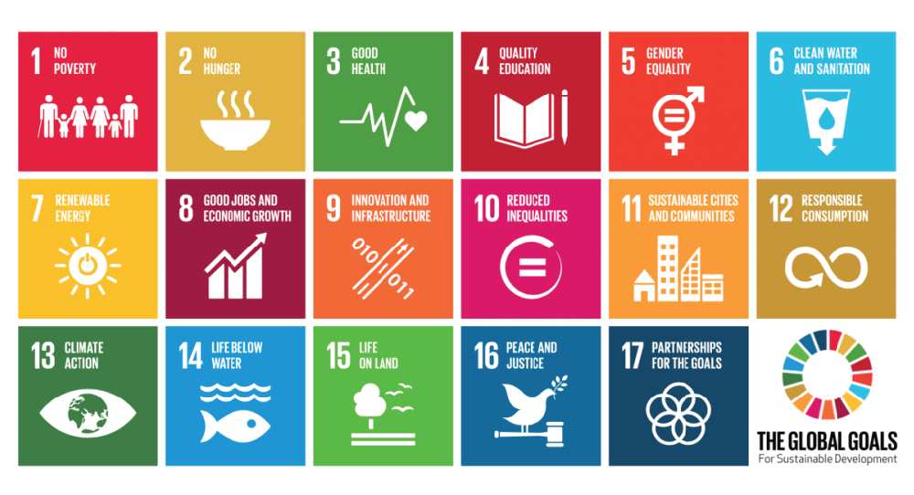
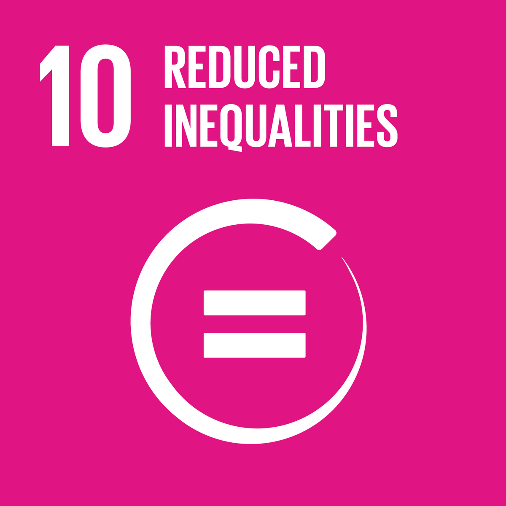

SDGs (Sustainable development goals) adalah 17
tujuan global yang diadopsi oleh PBB pada September
2015 sebagai bagian dari Agenda 2030 untuk pembangunan
berkelanjutan setelah selesainya tenggat MDGs. Masing-masing dari goals ini memiliki
jumlah target yang berbeda dengan total 169 target dari
17 tujuan agenda 2030. Tujuan SDGs secara umum adalah
untuk memastikan kesejahteraan global.
17 tujuan SDGs

Sumber: ubqmaterials.com

SDG ke 10
Mengurangi ketimpangan dalam dan antar negara
Terlalu banyak kekayaan dunia yang dipegang oleh segelintir orang.
Hal ini seringkali menyebabkan diskriminasi finansial dan sosial.
Agar bangsa dapat berkembang, kesetaraan dan kemakmuran harus
tersedia bagi semua orang.
Target
10.1
"Pada tahun 2030, secara progresif mencapai dan mempertahankan pertumbuhan pendapatan penduduk yang berada di bawah 40% dari populasi pada tingkat yang lebih tinggi dari rata-rata nasional."
Poin Utama :
Upaya peningkatan pendapat kelompok terendah terus dilakukan secara konsisten
Tingkat pertumbuhan pendapatan kelompok 40% terbawah harus lebih cepat daripada rata-rata nasional.
Pemerintah secara aktif melakukan upaya untuk meningkatkan pendapatan penduduk,
dengan program pemberdayaan masyarakat desa dan pengembangan UMKM. Namun, Ketimpangan
masih terlihat dari distribusi pengeluaran penduduk dengan pendapatan 40%
terendah yaitu sebesar 18,41 persen & 10% kelompok penduduk dengan pendapatan
tertinggi di Indonesia menyumbang sekitar 60% dari total konsumsi di daerah perkotaan.
Skor *gini Indonesia pada Mei 2015 adalah 0.41 dan mengalami pertumbuhan selama 10
tahun terakhir. Pada Maret 2025, skor *gini turun ke angka 0.375.
10.2
"Pada tahun 2030, memberdayakan dan meningkatkan *inklusi sosial, ekonomi dan politik bagi semua, terlepas dari usia, jenis kelamin, disabilitas, ras, suku, asal, agama atau kemampuan ekonomi atau status lainnya."
Poin Utama :
Upaya peningkatan pendapatan kelompok terendah terus dilakukan secara konsisten
Tidak semua individu dalam masyarakat mendapatkan kesempatan yang sama untuk mengakses sumber daya seperti layanan kesehatan, pendidikan dan pekerjaan yang layak. Perbedaan ini terlihat di antara masyarakat kota dan masyarakat desa yang tinggal di tempat-tempat terpelosok. Upaya yang sudah pemerintah lakukan untuk menghadapi masalah ini adalah mengadakan program sosial untuk masyarakat desa dengan tujuan untuk mengurangi kesenjangan.
10.3
"Menjamin kesempatan yang sama dan mengurangi kesenjangan hasil, termasuk dengan menghapus hukum, kebijakan dan praktik yang diskriminatif, dan mempromosikan legislasi, kebijakan dan tindakan yang tepat terkait legislasi dan kebijakan tersebut."
Poin Utama :
Untuk menghapus hukum dan aturan yang diskriminatif
Menggantikan hukum dan kebijakan yang bersifat diskriminatif dan dengan hukum yang lebih adil
Indonesia sudah memiliki aturan untuk memastikan kesetaraan. Contohnya, UU penghapusan diskriminasi ras dan etnis. Tetapi, diskriminasi masih terlihat dalam praktik hukum yang terkadang melibatkan praktik korupsi dan intervensi dari pihak yang berkuasa. Tetapi Indonesia menunjukkan perubahan ke arah yang baik meski belum sempurna.
10.4
"Mengadopsi kebijakan, terutama *kebijakan fiskal, kebijakan upah dan perlindungan sosial, serta secara progresif mencapai kesetaraan yang lebih besar."
Poin Utama :
Mengadopsi kebijakan yang mensupport kesetaraan
Secara perlahan tetapi pasti menghapus ketidaksetaraan
Indonesia telah menerapkan *kebijakan fiskal untuk menstabilkan perekonomian. Contoh dari kebijakan fiskal yang pernah dilakukan Indonesia adalah memotong pajak untuk kaum dengan pendapatan menengah rendah dan menaikan pajak untuk yang berpendapatan tinggi. Skor *gini Indonesia perlahan-lahan membaik seiring waktu, meskipun tidak terlalu signifikan.
10.5
Memperbaiki regulasi dan pengawasan pasar dan lembaga keuangan global, dan memperkuat pelaksanaan regulasinya.
Poin Utama :
Pengawasan aturan perbankan harus lebih ketat untuk menciptakan keamanan perbankan internasional
Aliran uang diatur dengan baik
Indonesia memiliki cara sendiri untuk meregulasi aktivitas lembaga keuangan. Salah satunya dengan
pembentukan OJK (otoritas jasa keuangan) yang mengatur semua aktivitas sektor keuangan. Indonesia
juga ikut dalam standar global *FATF untuk mencegah kejadian *pencucian uang. Namun, perlindungan konsumen
masih perlu ditingkatkan karena pada tahun 2025 diduga ada pembocoran data nasabah bank.
10.6
Memastikan peningkatan representasi dan suara bagi negara berkembang dalam pengambilan keputusan di lembaga-lembaga ekonomi dan keuangan internasional global, untuk membentuk kelembagaan yang lebih efektif, kredibel, akuntabel dan berlegitimasi.
Poin Utama :
Memberikan kesempatan bersuara untuk negara-negara berkembang dan miskin agar ketimpangan antar negara dapat dikurangi
Target 10.6 lebih fokus kepada tujuan global, tetapi juga memiliki hubungan dengan Indonesia. Karena Indonesia adalah salah satu negara berkembang. Indonesia khususnya menyoroti sistem pengambilan keputusan bank dunia yang masih berbasis saham. Hal tersebut menciptakan ketimpangan antara negara maju dan negara berkembang karena negara yang membeli saham terbesar lebih diprioritaskan
10.7
Memfasilitasi migrasi dan mobilitas manusia yang teratur, aman, berkala dan bertanggung jawab, termasuk melalui penerapan kebijakan migrasi yang terencana dan terkelola dengan baik.
Poin Utama :
Memfasilitasi proses mobilitas manusia untuk mengurangi migrasi ilegal
Meningkatkan jalan jalur migrasi legal untuk (visa, beasiswa)
Indonesia telah melakukan berbagai upaya untuk memastikan proses migrasi dan mobilitas manusia aman. Contohnya dengan membuat UU PMI (Pekerja Migran Indonesia) yang menetapkan hak buruh migran dan pengawasan agen menyalur.
10.a
Menerapkan prinsip perlakuan khusus dan berbeda bagi negara berkembang, khususnya negara yang kurang berkembang, sesuai dengan kesepakatan World Trade Organization.
Poin Utama :
Memfasilitasi negara berkembang dan miskin supaya dapat mencapai tujuan sdg pada tahun 2030
10.a menerapkan prinsip bahwa negara miskin dan berkembang akan mendapatkan perlakuan spesial. Contohnya, negara berkembang akan periode waktu yang lebih lama untuk mengimplementasikan Perjanjian dan komitmen dalam perdagangan internasional untuk mengurangi ketimpangan antar negara.
10.b
Mendorong bantuan pembangunan dan arus keuangan yang resmi, termasuk investasi asing secara langsung, ke negara-negara yang paling membutuhkan, terutama negara kurang berkembang, negara-negara Afrika, negara berkembang pulau kecil dan negara terkurung daratan, sesuai dengan rencana dan program nasional mereka.
Poin Utama :
Mengurangi kesenjangan antar negara dengan memberikan bantuan kepada negara berkembang dan miskin.
Negara pulau kecil, negara Afrika dan negara kurang berkembang akan mendapatkan dukungan finansial dari lembaga internasional atau negara maju. Bantuan ini dapat berupa pinjaman lunak, dana untuk infrastruktur dan Official Development Assistance(ODA).Indonesia pernah mendapat bantuan dari jepang yang berupa pinjaman lunak untuk pembangunan MRT
10.c
Pada tahun 2030, mengurangi biaya transaksi *remitansi migran hingga kurang dari 3 persen dan menghilangkan
Poin Utama :
Mengurangi rata-rata biaya *remitansi secara global dari 6% menjadi 3%
koridor remitansi tiap negara kurang dari 5%
Upaya yang telah dilakukan Indonesia untuk mengurangi biaya *remitansi adalah kerjasama dengan negara-negara lain. Contohnya, Indonesia melakukan kerjasama dengan Thailand, Filipina, Malaysia, vietnam, dll membangun QRIS cross border
Peringkat SDG Indonesia
Indonesia terletak di peringkat ke 77 secara global dengan indeks SDG 70,22 pada tahun 2024. Indeks SDG diperoleh dari 126 indikator yang dikumpulkan ahli setiap tahunnya. Setiap negara diberi skor dalam skala 0 hingga 100 untuk setiap SDG dan untuk Indeks SDG secara keseluruhan. nilai indeks 100 berarti negara tersebut sudah mencapai semua tujuan SDG dengan sempurna. Skor SDG Indonesia sangatlah bagus dan harus kita syukuri.